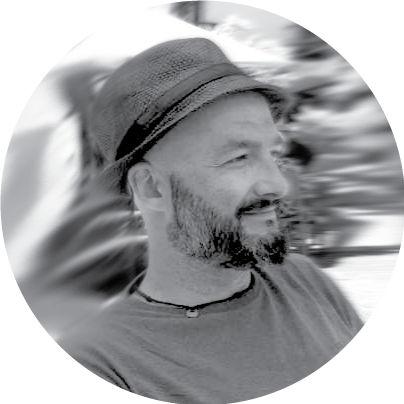

<div class="_container_info">
  <section class="_container_career">
    <div class="_container_img_personal">
      
    </div>
    <h3 class="_name">Sebastián Bellido</h3>
    <div class="_scroll">
      <ul>
        <li class="_info">
          Nació el <span>27 de octubre de 1979, </span>en el Sanatorio <span>Tandil</span>
          y fue registrado en <span>Benito Juárez, </span>Provincia de Buenos Aires, República <span>Argentina</span>.
          <span>Hijo de Mabel y Pepe, hermano de Carolina, tío de Salvador, Santiago y Simona.</span>
        </li>
        <li class="_info">
          Hizo su <span>escuela primaria en la N° 3 “Domingo Faustino Sarmiento”, y la secundaria,</span> 
          hasta 3er año inclusive <span>en el "Instituto Pedro Díaz Pumará" (IPDP),</span> 4to y 5to, 
          en el  <span>"Colegio Nacional"</span> de Benito Juárez. <span>En 2007 se recibió</span> en la Facultad de Bellas Artes 
          (FBA), hoy llamada Facultad de Artes (FA), de la Universidad Nacional de La Plata (UNLP), <span>como Diseñador en Comunicación Visual</span>
          (DCV). <span>En 2016 obtuvo el Tramo Pedagógico para Profesionales en Mar del Plata, <span>en 2018 realizó la Diplomatura en 
          Diseño de Interfaces y Experiencias Digitales</span> (UXDI) como becario 
          y en 2022 termina la Tecnicatura Universitaria en Desarrollo de Aplicaciones Informáticas</span> 
          (TUDAI) en la Facultad de Ciencias Exactas (FCEx) de la Universidad Nacional del Centro de la Provincia de Buenos Aires (UniCen) Tandil. 
        </li>
        <li class="_info">  
          <span>Desde 2007 ha trabajado</span> como profesional independiente atendiendo problemas 
          relacionados <span>con diseño editorial, branding, diseño de producto e ilustración.</span>
          Algunos de <span>sus diseños han ganado premios</span> y obtenido menciones en concursos <span>internacionales.</span>
        </li>
        <li class="_info"> 
          <span>Entre 2005 y 2009 ha impartido clases cómo ayudante alumno y luego como docente</span> 
          de Introducción al Lenguaje Visual, Métodos de Diseño, Lenguaje Visual 1 y Lenguaje Visual 3 
          <span>en la FBA de la UNLP. </span>
          Durante este período <span>fue co-fundador de la agrupación estudiantil 
            “Alternativa por Bellas Artes”</span> (ALBA), junto a Alejandro Castro Gamarra.
          <span>Durante 2005 fue Consejero Departamental</span> por el Claustro Alumnos <span>de Diseño en Comunicación Visual </span> (DCV), 
          <span>candidato a la Presidencia del Centro de Estudiantes y al Consejo Académico</span> de la Facultad de Bellas Artes de la UNLP.
        </li>
        <li class="_info"> 
          <span>Entre 2009 y 2011,</span> durante la Intendencia de Pedro Gamaleri, 
          <span>ocupó el cargo de Director de Cultura de la Municipalidad de Benito Juárez,</span> 
          Buenos Aires, Argentina. Gestión que, <span>en el año 2010, inaugura y pone 
          en funcionamiento el Centro Cultural “El Nacional”,</span> actual sede de la Dirección de Cultura
          <span>y en 2011 firma un Convenio con la embajada de México donde proponen intercambios</span> culturales, 
          educativos y sociales <span>muy prósperos para Benito Juárez</span> y su gente.
        </li>
        <li class="_info"> 
          <span>Entre 2014 y 2016 trabaja como diseñador gráfico freelance</span> desde Mar del Plata y <span> realiza el tramo de preparación Pedagógica para Profesionales.</span>
        </li> 
        <li class="_info"> 
          <span>En 2018 fue becado </span>para ingresar <span>en Diplomatura en 
          Diseño de Interfaces y Experiencias Digitales</span> (UXDI), impulsada por la Cámara de Empresas del Polo Informático de Tandil (CEPIT) y la Facultad de Ciencias Exactas (FCEx) de la Universidad Nacional del Centro de la Provincia de Buenos Aires (UniCen).
        </li> 
        <li class="_info"> 
          <span>Desde 2019</span> se encuentra abocado al <span>Diseño y Desarrollo de Aplicaciones e Interfaces de Usuario.</span> 
        </li> 
        <li class="_info"> 
          <span>Entre 2020 y 2021 fue Ayudante Alumno en la Cátedra Interfaces de Usuario e Interacción</span> 
          en FCEx de UniCen a cargo de Dr. Cristian García Bauza.
        <li class="_info"> 
          En su práctica Profesional de la carrera TUDAI <span>diseñó, desarrolló y puso en funcionamiento la plataforma 
          interactiva InvestigAr,</span> proyecto avalado por instiruciones como <a href="https://www.conicet.gov.ar/">CONICET, </a> <a href="https://www.itba.edu.ar/">ITBA, </a><a href="https://exa.unicen.edu.ar/">FCEx, </a> <a href="https://www.unicen.edu.ar/content/instituto-pladema-breve-rese%c3%b1a-institucional">Pladema, </a><a href="https://medialab.com.ar/">Media.lab.</a> y la empresa <a href="https://tuxdi.com/es/inicio/">TUXDI.</a>
        </li>
        <li class="_info"> 
          <span>Entre 2019 y 2023 ha formado parte de equipos de desarrollo de software</span> ocupando el rol de Desarrollador Frontend, Analista Funcional, Diseñador de Interfaces de Usuario y Experiencias de Usuario (UX/UI).
        <li class="_info"> 
          <span>Durante 2022 y parte de 2023</span> se desempeñó como <span>Diseñador UX/UI Sr. en Tsoft</span> 
          diseñando aplicaciones y herramientas de trabajo <span>para YPF.</span>  
        </li>
        <li class="_info"> 
          <span> Forma parte del cuerpo docente de Coderhouse</span> (Plataforma de enseñanza online) para <span>cursos
          Desarrollo Web.</span>
        </li>
        <li class="_info"> 
          <span>En 2023 y 2024,</span> continuando por ese camino profesional y emprendedor, 
          se ha radicado en España, <span>trabajando para Ruano Informática como Desarrollador Frontend utilizando React y DevExtreme.</span> 
          Generando además un nuevo emprendimiento llamado <a href="https://mabellstudio.com/works/home" target="_blank">"mabell studio"</a>, 
          siempre en busca de nuevas oportunidades de desarrollo personal y profesional.
        </li>
      </ul>
    </div>
  </section>
</div>
